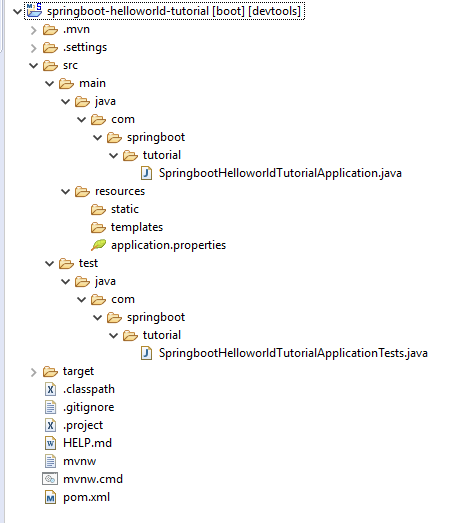

Create Spring Boot Project in Spring Tool Suite [STS]
In this article, we will see step by step, how to create a Spring Boot project in STS ( Spring Tool Suite).
Download the latest Spring tool suite at https://spring.io/tools.
Download STS for Windows 64-bit at Spring Tool Suite for Windows 64-Bit.
Download STS for Linux 64-bit at Spring Tool Suite for Linux 64-Bit.
Download STS for Mic OS 64-bit at Spring Tool Suite for Mac OS 64-Bit.
Once you download STS as a Jar file then double click on it ( make sure you have installed JDK in your system and set up JAVA_HOME for the same)
Click on the STS icon in the Spring Tool Suite (STS) explorer and choose the workspace.
Create Spring Boot Project in Spring Tool Suite [STS]
The below gif image shows step by step process to create a Spring boot project in STS:

Follow the below steps:
1. Right-click in the package explorer and select New -> Spring Starter Project
2. Specify project details
Look at the above diagram, we have specified the following details:
- Generate: Maven Project
- Language: Java
- Java Version: 1.8 (Default)
- Spring Boot: 2.1.4
- Group: com.springboot.tutorial
- Artifact: springboot-helloworld-tutorial
- Name: com.springboot.tutorial
- Description: Demo project for Spring Boot
- Package Name : com.springboot.tutorial
- Packaging: jar (This is the default value)
- Dependencies: Web, JPA, MySQL, Dev Tools
Once you click Finish, Maven would take some time to download all the dependencies and initialize the project.
3. Project Structure
Check out the complete Spring boot tutorial at Master in Spring Boot Tutorial.